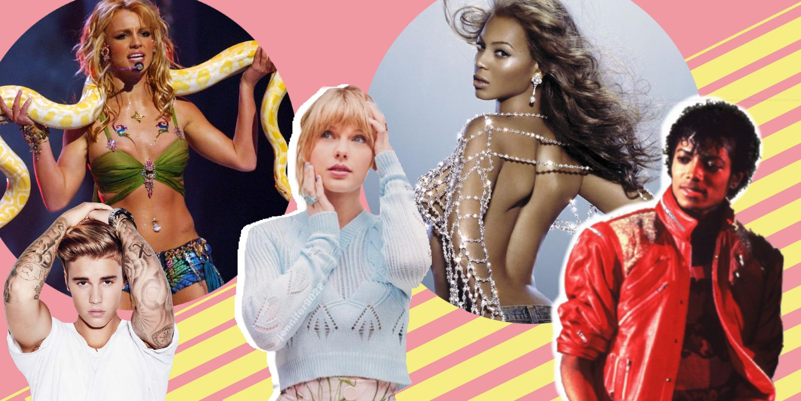

Tipos de musica
Hecho Por: Joel Perez Cruz
Tipos
Descripcion
Ejemplos
Imagenes
Rock
El rock es un género musical que se originó en la década de 1950 en Estados Unidos. Se caracteriza por un ritmo fuerte y enfático, generalmente basado en el uso de la guitarra eléctrica, el bajo, la batería y, a menudo, teclados. Sus raíces se encuentran en el rock and roll, el rhythm and blues y la música country. Con el tiempo, el rock ha evolucionado y se ha diversificado en numerosos subgéneros, incluyendo el rock alternativo, el punk, el heavy metal y el grunge. Además de su impacto musical, el rock ha tenido una influencia significativa en la cultura y la sociedad, especialmente entre los jóvenes.
Queen, Creedence Clearwater Revival, The Beatles, Guns N' Roses, Linkin Park, The Ramsus, AC/DC, Nirvana, The score, The Europe, Skillet, Starset, The rolling Stone, The beatles, Imagine Dragons, Twenty One Pilots, The polices, Starship, Ashe Remain
Electronica
La música electrónica es un género que se crea con dispositivos y tecnología digital, como sintetizadores y software de producción. Incluye estilos como techno, house y dubstep. Este género permite explorar nuevas sonoridades y ha influido en muchos otros géneros musicales.
Kygo, Calvin Harris, Martin Garrix, Alan Walker, Gryffin, Krewella, Zedd, Alesso, Tobu, David Guetta, The Chainsmokers, Marshmello,swedish House Mafia, Major Lazer, Avicii, Galatis, Illenium, Lost Frequencies, Jonas Blue, TheFatRAT
Pop
La música pop es un género musical accesible y comercialmente exitoso, caracterizado por melodías pegajosas, letras sencillas y estructuras de canciones repetitivas. Surgió en la década de 1950 y ha evolucionado incorporando elementos de rock, dance, hip-hop y R&B. Es conocida por su amplia difusión en medios de comunicación y su capacidad para adaptarse a las tendencias culturales. Artistas como Michael Jackson, Madonna y Beyoncé son íconos del pop, destacando por su impacto en la cultura popular y la industria musical.
Dualipa, Charlie Puth, Ed Sheeran, The weekend, One Direction, Rihanna, Hailee Steinfeld, Camila cabello, Maroon5, Katy Perry, Ellie Goulding, Nick Jonas, Taylor Swift, Bebe Rexha, coldplay, Bruno Mars, One Republic, Sia, Miley Cyrus, Kesha, Kelly Clarson, Ariana Grande, Justin Bieber, Demi Lovato, Selena Gomez
